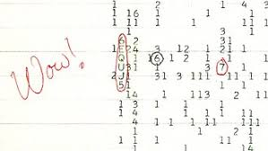

The Wow! signal was a strong narrowband radio signal (6EQUJ5), and wrote the comment "Wow!" beside it detected on August 15, 1977. Astronomer Jerry R. Ehman discovered the anomaly a few days later while reviewing the recorded data and wrote the comment "Wow!" beside it.

The entire signal sequence lasted for the full 72-second window during which Big Ear, (a radio telescope in Ohio State University) was able to observe it.
Despite numerous theories such as brief consideration of reflections from space debris, interstellar scintillation, and comet hydrogen clouds, no explanation has been confirmed. I personally can't quite form a solid opinion on this as it could be so other things, the chance of it being extra-terrestrial intelligance quite slim.